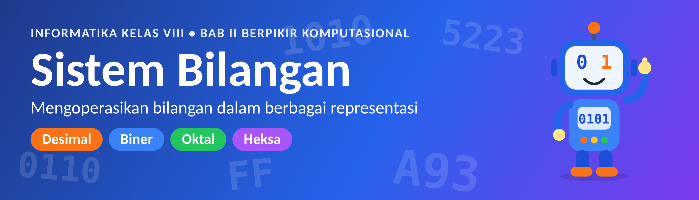
Halo, Detektif Angka!
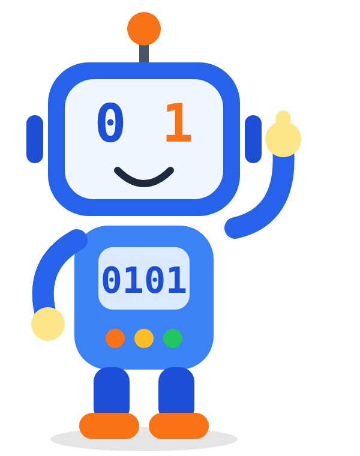
Pernah penasaran kenapa komputer hanya mengenal angka 0 dan 1, tapi bisa memutar video, main game, sampai mengirim pesan WhatsApp? Rahasianya ada di sistem bilangan.
Hari ini kamu bukan sekadar murid, tapi detektif angka. Tugasmu: menemukan sendiri pola di balik angka-angka, lalu membuktikannya. Kenalkan, ini Bibi, robot asistenmu. Dia akan muncul setiap kali ada tantangan.
- Menjelaskan apa itu basis dan nilai tempat pada sebuah bilangan.
- Mengenal bilangan desimal, biner, oktal, dan heksadesimal.
- Mengubah bilangan desimal ke biner, oktal, heksadesimal dan sebaliknya.
- Menemukan jalan pintas mengubah biner ke oktal dan heksadesimal.
- Menemukan di mana bilangan-bilangan ini dipakai dalam kehidupan sehari-hari.
Tebak dulu, baru cek jawaban di Kotak Jawaban. Kalau kamu membaca versi cetak, tutup kotak jawaban dengan kertas sampai selesai menebak. Salah tebak itu wajar. Detektif hebat justru belajar dari tebakan yang meleset.
Misi 1: Kenapa Setelah 9 Jadi 10?
Coba perhatikan timbangan digital di toko atau di dapur rumah. Angka di layarnya berubah dari kanan dulu. Digit paling kanan naik: 0, 1, 2, … sampai 9. Kalau ternyata masih kurang, digit paling kanan kembali ke 0, dan digit di sebelah kirinya naik 1. Jadilah 0010.
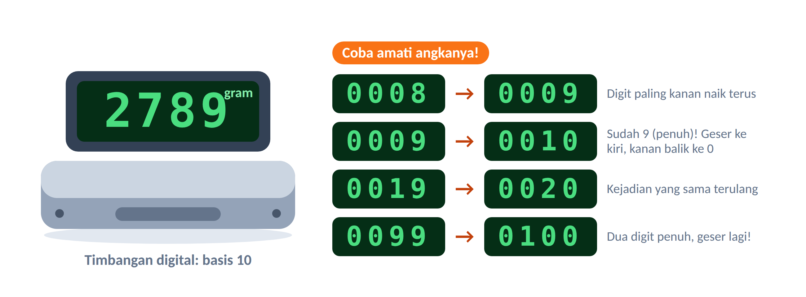
- Kalau timbangan menunjukkan 0099, lalu ditambah 1 gram, angka apa yang muncul?
- Kenapa digit dianggap “penuh” setelah mencapai 9? Apa hubungannya dengan jumlah simbol yang dipakai (0 sampai 9 ada berapa simbol)?
Jawabanmu cocok dengan ini?
1. 0100. Dua digit paling kanan penuh (99), jadi keduanya kembali ke 0 dan digit di kirinya naik 1.
2. Ada 10 simbol (0, 1, 2, …, 9). Setelah simbol terakhir dipakai, digit kembali ke 0 dan “menitip” 1 ke kiri. Angka 10 inilah yang disebut basis. Sistem yang memakai 10 simbol disebut desimal atau basis 10.
Misi 2: Membongkar Angka 2789
Setiap digit punya “harga” sesuai tempatnya. Tempat itu disebut posisi, dihitung dari kanan dan dimulai dari 0 (bukan 1). Harga tiap posisi adalah basisposisi.
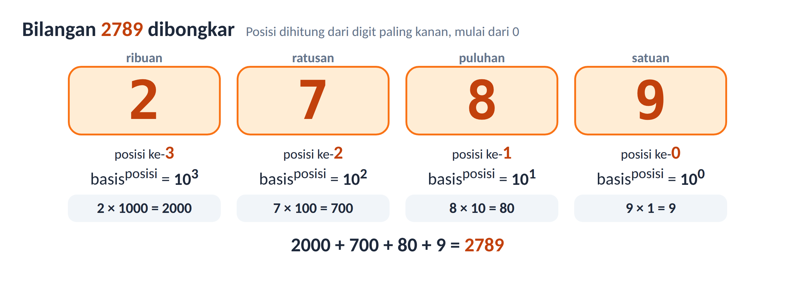
Jadi: 2789 = 2×103 + 7×102 + 8×101 + 9×100 = 2000 + 700 + 80 + 9.
Posisi paling kanan adalah posisi ke-0. Bilangan apa pun yang dipangkatkan 0 hasilnya 1, jadi digit paling kanan selalu dikali 1.
Misi 3: Kasus Tas dan Logam Mulia
Bayangkan kamu diberi kesempatan membawa logam mulia sebanyak mungkin dari sebuah ruangan. Tasmu hanya kuat menampung 2707 gram. Kamu harus mengisinya sampai pas penuh.
Kasus 1: batang 1000 g, 100 g, 10 g, dan 1 g (tiap jenis ada 9 batang)
Berapa batang tiap jenis yang kamu masukkan ke tas? Mulailah dari batang yang paling berat.
Isi tas kasus 1
1000 g × 2 = 2000 (sisa 707) → 100 g × 7 = 700 (sisa 7) → 10 g × 0 (sisa 7 tidak cukup untuk 10 g) → 1 g × 7 = 7 (sisa 0).
Jumlah batang tiap jenis: 2, 7, 0, 7. Itulah bilangan 2707!
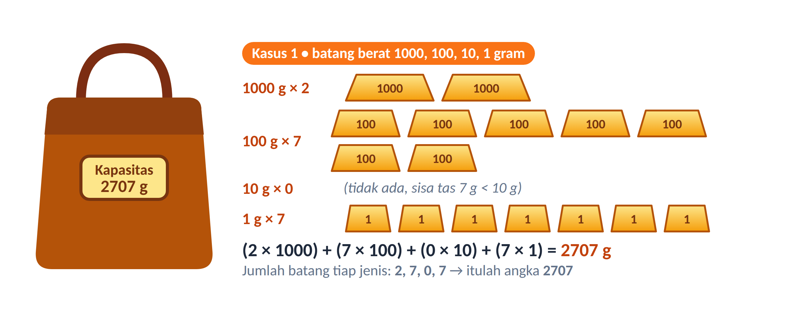
Kasus 2: batang 512 g, 64 g, 8 g, dan 1 g (tiap jenis ada 7 batang)
Kapasitas tas masih 2707 g. Jenis batangnya berbeda, jadi cara mengisinya juga berbeda.
Isi tasnya sampai penuh. Tulis berapa batang dari tiap jenis, lalu susun jadi satu bilangan.
Isi tas kasus 2
512 g × 5 = 2560 (sisa 147) → 64 g × 2 = 128 (sisa 19) → 8 g × 2 = 16 (sisa 3) → 1 g × 3 = 3 (sisa 0).
Jumlah batang: 5, 2, 2, 3 → bilangan 5223. Berat batang: 83, 82, 81, 80. Jadi ini adalah basis 8.
Kasus 3: batang 2048, 1024, 512, …, 4, 2, 1 gram (tiap jenis hanya 1 batang)
Setiap batang hanya ada satu. Jadi untuk tiap jenis, pilihanmu cuma dua: ambil (1) atau tidak ambil (0).
| Berat batang (g) | 2048 | 1024 | 512 | 256 | 128 | 64 | 32 | 16 | 8 | 4 | 2 | 1 |
|---|---|---|---|---|---|---|---|---|---|---|---|---|
| Ambil? (1/0) | 1 | 0 | 1 | 0 | 1 | 0 | 0 | 1 | 0 | 0 | 1 | 1 |
| Sisa kapasitas (g) | 659 | 659 | 147 | 147 | 19 | 19 | 19 | 3 | 3 | 3 | 1 | 0 |
Bilangan yang terbentuk: 1010 1001 00112 (angka 2 kecil di kanan bawah menandakan basisnya). Berat batangnya 211, 210, …, 20, jadi ini basis 2.
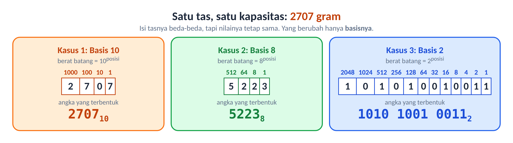
- Isi tasnya berbeda-beda, tapi nilainya tetap 2707 gram. Yang berubah hanya basisnya: 10, 8, dan 2.
- Berat batang selalu basisposisi: 1, 10, 100, 1000 (basis 10); 1, 8, 64, 512 (basis 8); 1, 2, 4, 8, … (basis 2).
- Jumlah batang terbanyak untuk tiap jenis adalah basis − 1: 9 (desimal), 7 (oktal), 1 (biner).
- Jadi 270710 = 52238 = 1010 1001 00112.
Misi 4: Kenalan dengan Empat Sistem Bilangan
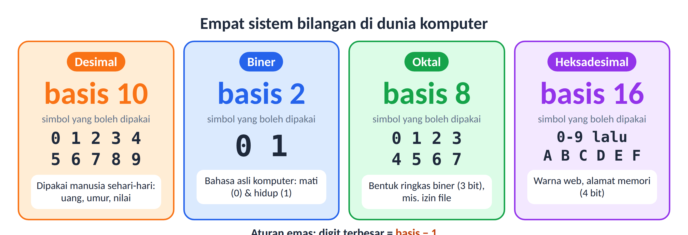
| Sistem | Basis | Simbol yang dipakai | Contoh penulisan | Dipakai untuk |
|---|---|---|---|---|
| Desimal | 10 | 0–9 | 270710 | Kehidupan sehari-hari |
| Biner | 2 | 0, 1 | 11012 | Bahasa asli komputer (bit) |
| Oktal | 8 | 0–7 | 52238 | Bentuk ringkas biner (3 bit) |
| Heksadesimal | 16 | 0–9 dan A–F | A9316 | Warna, alamat memori (4 bit) |
Angka kecil di kanan bawah (subskrip) menunjukkan basis. 11012 dibaca “satu satu nol satu basis dua”. Kalau basisnya tidak ditulis, anggap saja desimal.
Tabel sakti 0 sampai 15
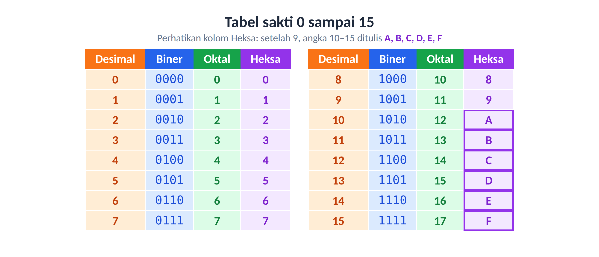
- Setelah 1 di sistem biner, angka berikutnya ditulis apa? Bagaimana dengan setelah 7 di sistem oktal?
- Kenapa heksadesimal butuh huruf A sampai F?
- Perhatikan bilangan 8. Bagaimana penulisannya di biner dan oktal? Apa polanya?
Temuan detektif
1. Setelah 1 di biner adalah 10 (dibaca “satu nol”, nilainya dua). Setelah 7 di oktal adalah 10 (nilainya delapan). Sama seperti 9 → 10 di desimal: simbol terakhir habis, digit kembali ke 0 dan geser ke kiri.
2. Heksadesimal butuh 16 simbol, tetapi angka hanya ada 0–9. Sisanya dipinjam dari huruf: A=10, B=11, C=12, D=13, E=14, F=15.
3. 8 = 10002 = 108. Di biner, 8 = 23 sehingga digit 1 ada di posisi ke-3. Di oktal, 8 adalah satu “kelompok delapan” tanpa sisa.
Kartu biner (dan lampu ajaib)
Siapkan 8 kartu bernilai 128, 64, 32, 16, 8, 4, 2, 1. Setiap kartu bernilai dua kali lipat kartu di kanannya. Untuk menunjukkan suatu angka, buka kartu-kartu yang jumlahnya sama dengan angka itu. Kartu terbuka = 1, kartu tertutup = 0.
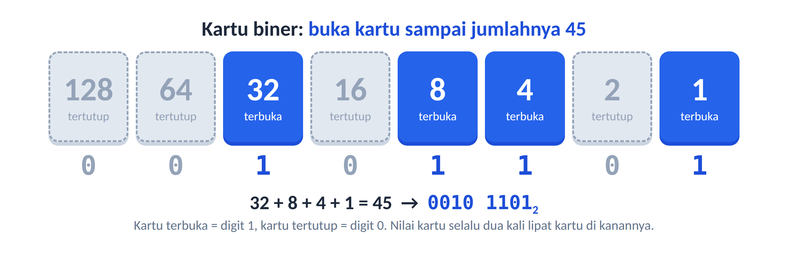
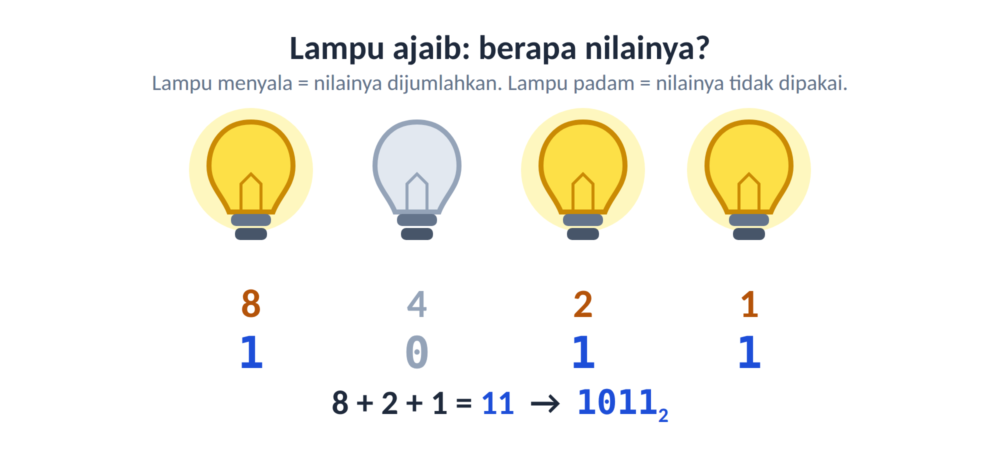
Tunjukkan angka 19 dan 100 dengan 8 kartu binermu. Kartu mana saja yang terbuka?
Kotak Jawaban
19 = 16 + 2 + 1 → kartu 16, 2, 1 terbuka → 0001 00112.
100 = 64 + 32 + 4 → kartu 64, 32, 4 terbuka → 0110 01002.
Misi 5: Dari Desimal ke Biner, Oktal, dan Heksadesimal
Di kasus tas tadi kamu mengisi batang satu per satu. Untungnya ada cara yang lebih cepat dan bisa dipakai untuk bilangan sebesar apa pun: bagi terus, catat sisanya. Cara ini sebenarnya sebuah algoritma, yaitu langkah-langkah yang jelas dan berulang.
- Siapkan tempat hasil yang masih kosong.
- Bagi bilangan N dengan basis tujuan (2, 8, atau 16).
- Catat sisa pembagiannya, tulis di paling kiri hasil.
- Ganti N dengan hasil bagi (bilangan bulat).
- Ulangi langkah 2–4 sampai N menjadi 0.
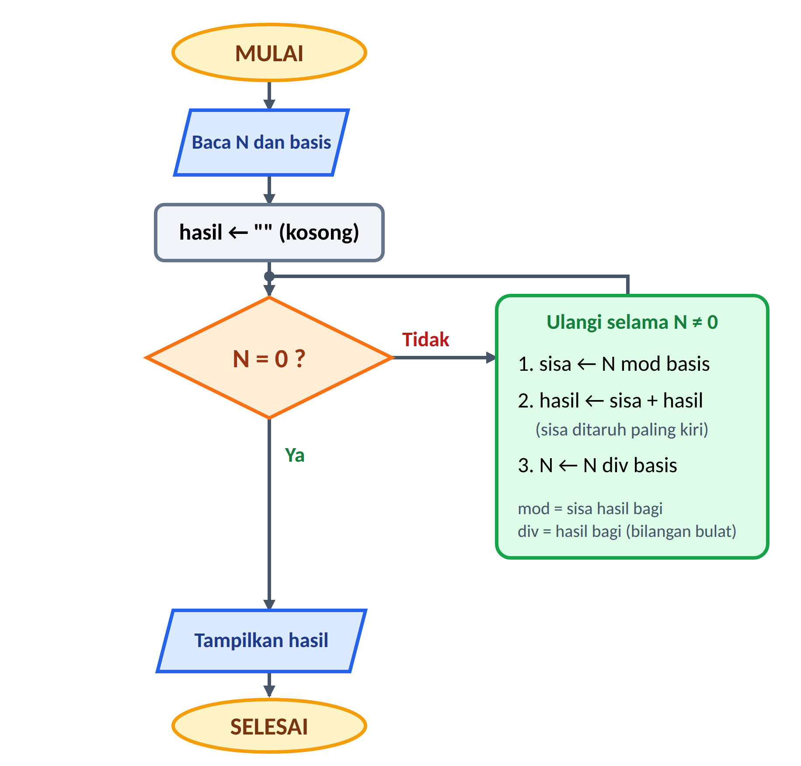
Contoh 1 dan 2: 50 ke biner dan oktal
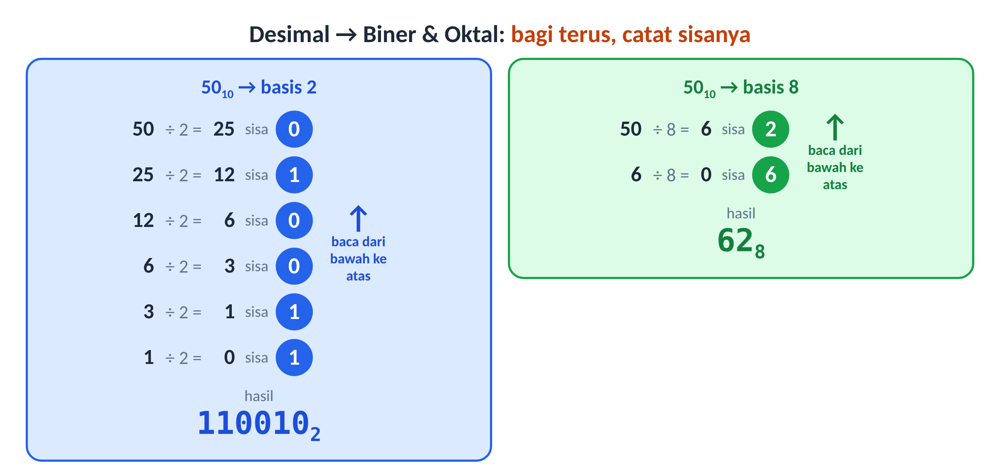
Jadi 5010 = 1100102 = 628. Kalau mau mengecek, ubah kembali: 1100102 = 32 + 16 + 2 = 50.
Contoh 3: 90 ke heksadesimal
| N | Bagi 16 | Hasil bagi | Sisa | Ditulis |
|---|---|---|---|---|
| 90 | 90 ÷ 16 | 5 | 10 | A |
| 5 | 5 ÷ 16 | 0 | 5 | 5 |
Sisa dibaca dari bawah ke atas: 5 lalu A, jadi 9010 = 5A16. (Sisa 10 ditulis A.)
- Sisa dibaca dari bawah ke atas, bukan dari atas ke bawah.
- Di heksadesimal, sisa 10 sampai 15 ditulis A sampai F.
- Berhenti bila hasil bagi sudah 0, bukan bila sisanya 0.
Ubah 25 ke biner dan oktal, lalu ubah 200 ke heksadesimal. Cek balik hasilmu!
Kotak Jawaban
25 → biner: 25÷2=12 sisa 1; 12÷2=6 sisa 0; 6÷2=3 sisa 0; 3÷2=1 sisa 1; 1÷2=0 sisa 1 → 110012.
25 → oktal: 25÷8=3 sisa 1; 3÷8=0 sisa 3 → 318.
200 → heksa: 200÷16=12 sisa 8; 12÷16=0 sisa 12 (C) → C816.
Cek: 16+8+1 = 25; 3×8+1 = 25; 12×16+8 = 200.
Misi 6: Balik ke Desimal
Sekarang arahnya dibalik. Rumusnya masih ingat? Sama seperti saat membongkar 2789: kalikan tiap digit dengan basisposisi, lalu jumlahkan.
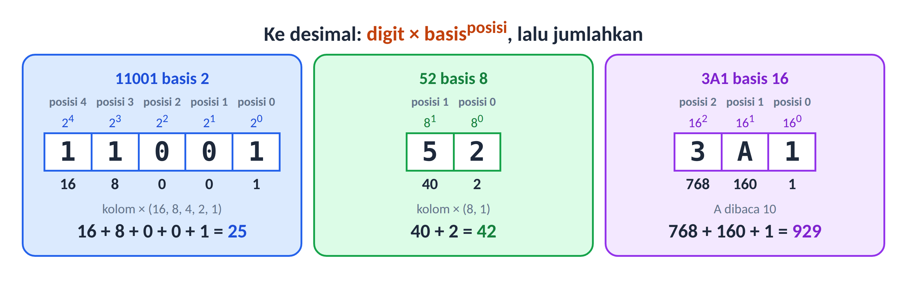
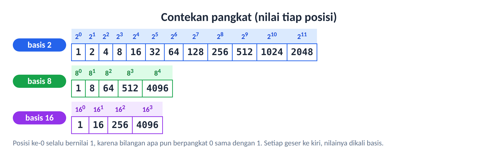
Ubah ke desimal: 101102, 748, dan 2F16.
Kotak Jawaban
101102 = 16 + 0 + 4 + 2 + 0 = 22.
748 = 7×8 + 4×1 = 56 + 4 = 60.
2F16 = 2×16 + 15×1 = 32 + 15 = 47 (F bernilai 15).
Misi 7: Jalan Pintas Biner
Ternyata kamu bisa loncat langsung dari biner ke oktal atau heksadesimal tanpa lewat desimal. Rahasianya: 8 = 23 dan 16 = 24. Artinya satu digit oktal = 3 bit dan satu digit heksadesimal = 4 bit.
- Kelompokkan bit biner dari kanan (3 bit untuk oktal, 4 bit untuk heksadesimal).
- Kalau kelompok paling kiri kurang, tambahkan 0 di kirinya.
- Ubah tiap kelompok menjadi satu digit (lihat tabel 0–15). Gabungkan.
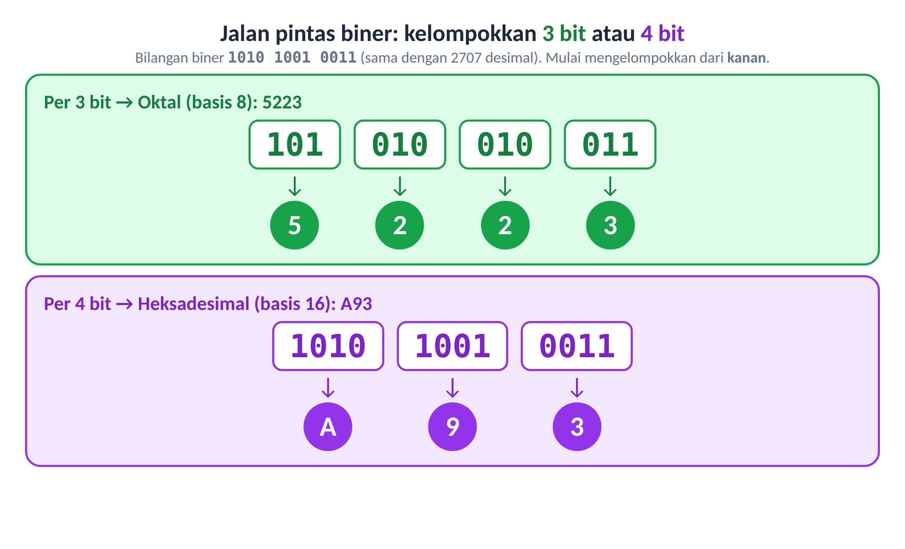
Ingat bilangan 2707 di awal tadi? Ternyata 270710 = 1010 1001 00112 = 52238 = A9316. Satu bilangan, empat penulisan. Untuk arah sebaliknya, ubah tiap digit oktal/heksa menjadi 3 atau 4 bit, misalnya A93 → 1010 1001 0011.
(a) 1011102 → oktal. (b) 110101102 → heksadesimal. (c) 2578 → biner.
Kotak Jawaban
(a) 101 | 110 → 5 | 6 → 568.
(b) 1101 | 0110 → D | 6 → D616.
(c) 2 | 5 | 7 → 010 | 101 | 111 → 101011112 (nol paling kiri boleh dibuang).
Misi 8: Dipakai di Mana Sih?
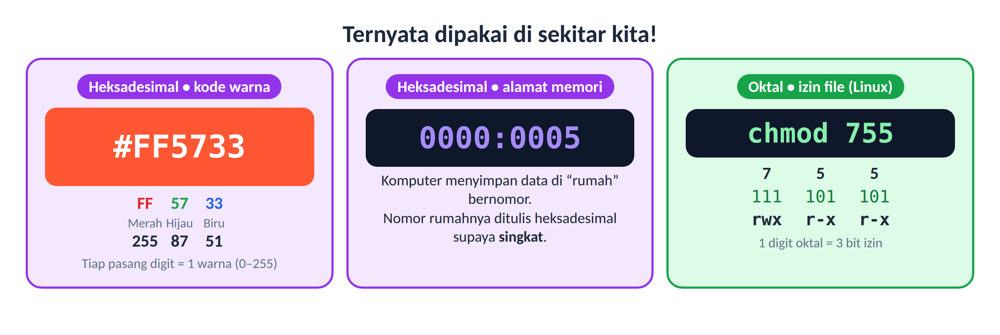
- Kode warna. #FF5733 berarti Merah = FF (255), Hijau = 57 (87), Biru = 33 (51). Dua digit heksa cukup untuk 0–255, yaitu tepat satu byte.
- Alamat memori. Komputer menyimpan data di “rumah” bernomor. Nomor rumahnya ditulis heksadesimal supaya singkat.
- Izin file di Linux.
chmod 755memakai oktal: tiap digit adalah 3 bit izin (baca, tulis, jalankan). 7 = 111 = rwx, 5 = 101 = r-x. - Komputer sendiri. Semua data (teks, gambar, video) akhirnya disimpan sebagai deretan 0 dan 1.
Rangkuman
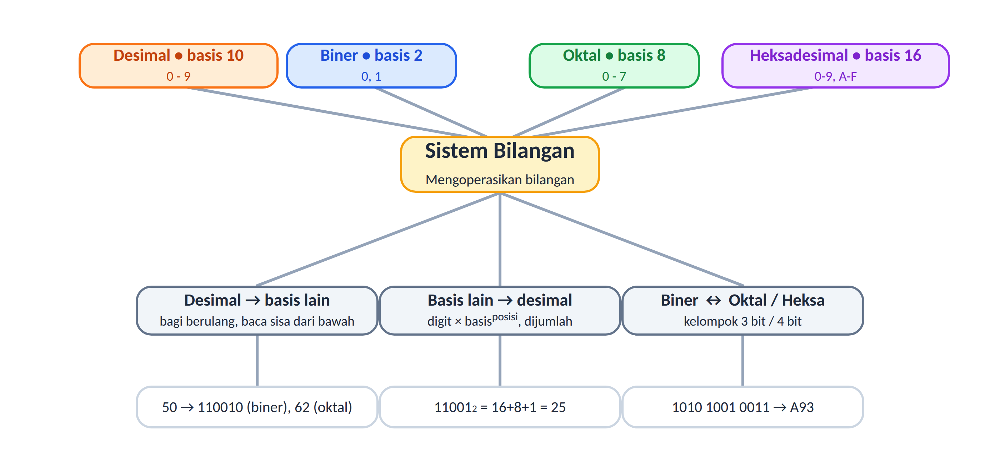
| Yang ingin dilakukan | Caranya |
|---|---|
| Desimal → basis lain | Bagi terus dengan basis tujuan, catat sisa, baca dari bawah ke atas. |
| Basis lain → desimal | Kalikan tiap digit dengan basisposisi (posisi dari kanan mulai 0), lalu jumlahkan. |
| Biner → oktal | Kelompokkan 3 bit dari kanan, ubah tiap kelompok. |
| Biner → heksadesimal | Kelompokkan 4 bit dari kanan, ubah tiap kelompok (10–15 = A–F). |
| Digit terbesar | Selalu basis − 1: desimal 9, biner 1, oktal 7, heksa F. |
Latihan Mandiri
- Berapa digit terbesar yang dipakai pada bilangan oktal?
- Ubah 11012 menjadi bilangan desimal.
- Ubah 37 (desimal) menjadi bilangan biner.
- Ubah 2B16 menjadi bilangan desimal.
- Ubah 111 010 0012 menjadi bilangan oktal dengan jalan pintas.
- Andi berkata, “10002 lebih besar daripada 99910.” Setujukah kamu? Jelaskan.
Kunci latihan (jangan intip sebelum mencoba!)
1. 7.
2. 8 + 4 + 0 + 1 = 13.
3. 37÷2=18 sisa 1; 18÷2=9 sisa 0; 9÷2=4 sisa 1; 4÷2=2 sisa 0; 2÷2=1 sisa 0; 1÷2=0 sisa 1 → 1001012.
4. 2×16 + 11 = 43.
5. 111 | 010 | 001 → 7 | 2 | 1 → 7218.
6. Tidak setuju. 10002 = 1×23 = 8, jauh lebih kecil daripada 999.
Refleksi Detektif
Beri tanda centang (✓) pada kemampuan yang sudah kamu kuasai:
| Aku sudah bisa … | Sudah | Hampir | Belum |
|---|---|---|---|
| menjelaskan basis dan nilai tempat | |||
| mengubah desimal ke biner, oktal, dan heksadesimal | |||
| mengubah biner, oktal, dan heksadesimal ke desimal | |||
| mengubah biner ke oktal/heksadesimal dengan jalan pintas | |||
| menceritakan contoh pemakaian bilangan ini dalam kehidupan |
Bagian yang paling seru menurutku: ______________________________________________
Bagian yang masih membuatku bingung: ___________________________________________
Kamus Mini
| Istilah | Artinya |
|---|---|
| Basis | Banyaknya simbol yang dipakai dalam sebuah sistem bilangan (10, 2, 8, 16). |
| Digit | Satu simbol penyusun bilangan, misalnya 2, 7, 8, 9 pada 2789. |
| Posisi | Urutan tempat digit dari kanan, dimulai dari 0. |
| Bit | Satu digit biner (0 atau 1). Singkatan dari *binary digit*. |
| Byte | Kumpulan 8 bit. Bisa menyimpan nilai 0 sampai 255. |
| Konversi | Mengubah cara penulisan bilangan dari satu basis ke basis lain tanpa mengubah nilainya. |